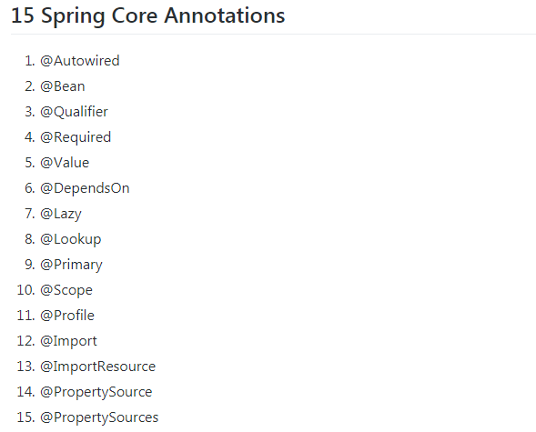

In this quick article, we will discuss Spring core annotations that are used in Spring Dependency Injection, Java-based configuration, Annotation-based configuration, and Spring IOC.
Let's list all known Spring core annotations.
The @Autowired annotation is used for automatic dependency injection in Spring. It can be
applied to
constructors, fields, and setter methods.
@RestController
public class CustomerController {
private final CustomerService customerService;
@Autowired
public CustomerController(CustomerService customerService) {
this.customerService = customerService;
}
}
@RestController
public class CustomerController {
private CustomerService customerService;
@Autowired
public void setCustomerService(CustomerService customerService) {
this.customerService = customerService;
}
}
@RestController
public class CustomerController {
@Autowired
private CustomerService customerService;
}
For more details, visit our articles on Spring @Autowired Annotation and Guide to Dependency Injection in Spring.
The @Bean annotation indicates that a method produces a bean managed by the Spring container. It
is typically
declared in the configuration class.
@Configuration
public class AppConfig {
@Bean
public CustomerService customerService() {
return new CustomerService();
}
@Bean
public OrderService orderService() {
return new OrderService();
}
}
This configuration is equivalent to the following Spring XML:
<beans>
<bean id="customerService" class="com.companyname.projectname.CustomerService"/>
<bean id="orderService" class="com.companyname.projectname.OrderService"/>
</beans>
Read more about the @Bean annotation on Spring @Bean Annotation with Example.
The @Qualifier annotation is used in conjunction with @Autowired to avoid confusion
when multiple beans of
the same type are configured.
Consider EmailService and SMSService implementing a single
MessageService interface.
public interface MessageService {
void sendMsg(String message);
}
@Component
public class EmailService implements MessageService {
public void sendMsg(String message) {
System.out.println("Email message: " + message);
}
}
@Component
public class SMSService implements MessageService {
public void sendMsg(String message) {
System.out.println("SMS message: " + message);
}
}
Using @Qualifier to inject specific implementations:
@Component
public class MessageProcessor {
private final MessageService messageService;
@Autowired
@Qualifier("emailService")
public MessageProcessor(MessageService messageService) {
this.messageService = messageService;
}
public void processMsg(String message) {
messageService.sendMsg(message);
}
}
Read more on Spring @Qualifier Annotation Example.
The @Required annotation is a method-level annotation applied to the setter method of a bean. It
indicates
that the setter method must be configured with a value at configuration time.
@Required
void setColor(String color) {
this.color = color;
}
XML Configuration:
<bean class="com.javaguides.spring.Car">
<property name="color" value="green"/>
</bean>
The @Value annotation is used to assign default values to variables and method arguments. It
supports Spring
Expression Language (SpEL) for complex expressions.
@Value("Default DBConfiguration")
private String defaultName;
@Value("${java.home}")
private String javaHome;
@Value("#{systemProperties['java.home']}")
private String javaHomeSpel;
The @DependsOn annotation forces the Spring IoC container to initialize one or more beans before
the bean
annotated with @DependsOn.
public class FirstBean {
@Autowired
private SecondBean secondBean;
}
public class SecondBean {
public SecondBean() {
System.out.println("SecondBean Initialized via Constructor");
}
}
@Configuration
public class AppConfig {
@Bean("firstBean")
@DependsOn("secondBean")
public FirstBean firstBean() {
return new FirstBean();
}
@Bean("secondBean")
public SecondBean secondBean() {
return new SecondBean();
}
}
Read more on Spring @DependsOn Annotation Example.
The @Lazy annotation delays the initialization of a singleton bean until it is first requested.
public class FirstBean {
public void test() {
System.out.println("Method of FirstBean Class");
}
}
@Configuration
public class AppConfig {
@Lazy
@Bean
public FirstBean firstBean() {
return new FirstBean();
}
@Bean
public SecondBean secondBean() {
return new SecondBean();
}
}
Read more on Spring @Lazy Annotation Example.
A method annotated with @Lookup tells Spring to return an instance of the method’s return type
when it is invoked.
Read more about the annotation in Spring @LookUp Annotation.
The @Primary annotation gives higher preference to a bean when multiple beans of the same type
exist.
@Component
@Primary
public class Car implements Vehicle {}
@Component
public class Bike implements Vehicle {}
@Component
public class Driver {
@Autowired
private Vehicle vehicle;
}
Read more on Spring @Primary Annotation Example.
The @Scope annotation defines the scope of a @Component class or a
@Bean definition.
@Component
@Scope(ConfigurableBeanFactory.SCOPE_SINGLETON)
public class SingletonService implements MessageService {}
@Component
@Scope(ConfigurableBeanFactory.SCOPE_PROTOTYPE)
public class PrototypeService implements MessageService {}
Read more on Spring @Scope Annotation with Singleton Scope Example and Spring @Scope Annotation with Prototype Scope Example.
The @Profile annotation is used to conditionally include @Component classes or
@Bean methods
based on the active profile.
@Component
@Profile("sportDay")
public class Bike implements Vehicle {}
Read more on Spring Profiles.
The @Import annotation allows loading @Bean definitions from another configuration
class.
@Configuration
public class ConfigA {
@Bean
public A a() {
return new A();
}
}
@Configuration
@Import(ConfigA.class)
public class ConfigB {
@Bean
public B b() {
return new B();
}
}
Read more on Spring @Import Annotation.
The @ImportResource annotation loads beans from an applicationContext.xml file into
the ApplicationContext.
@Configuration
@ImportResource({"classpath*:applicationContext.xml"})
public class XmlConfiguration {}
Read more on Spring @ImportResource Annotation.
The @PropertySource annotation adds a PropertySource to Spring’s Environment.
@Configuration
@PropertySource("classpath:config.properties")
public class PropertySourceDemo implements InitializingBean {
@Autowired
private Environment env;
@Override
public void afterPropertiesSet() throws Exception {
setDatabaseConfig();
}
private void setDatabaseConfig() {
DataSourceConfig config = new DataSourceConfig();
config.setDriver(env.getProperty("jdbc.driver"));
config.setUrl(env.getProperty("jdbc.url"));
config.setUsername(env.getProperty("jdbc.username"));
config.setPassword(env.getProperty("jdbc.password"));
System.out.println(config.to
String());
}
}
Read more on Spring @PropertySource Annotation Example.
The @ComponentScan annotation configures component scanning directives for Spring to locate and
register beans within the specified packages.
@Configuration
@ComponentScan(basePackages = "com.example")
public class AppConfig {}
The @SpringBootApplication annotation marks the main class of a Spring Boot application. It
combines the
functionality of @Configuration, @EnableAutoConfiguration, and
@ComponentScan.
Example
@SpringBootApplication
public class MySpringBootApplication {
public static void main(String[] args) {
SpringApplication.run(MySpringBootApplication.class, args);
}
}
In this guide, we covered the fundamental Spring core annotations used for dependency injection, configuration, and managing the Spring IoC container. Understanding these annotations is crucial for effectively developing and configuring Spring applications. For further reading and deeper insights, follow the linked resources within each annotation section.